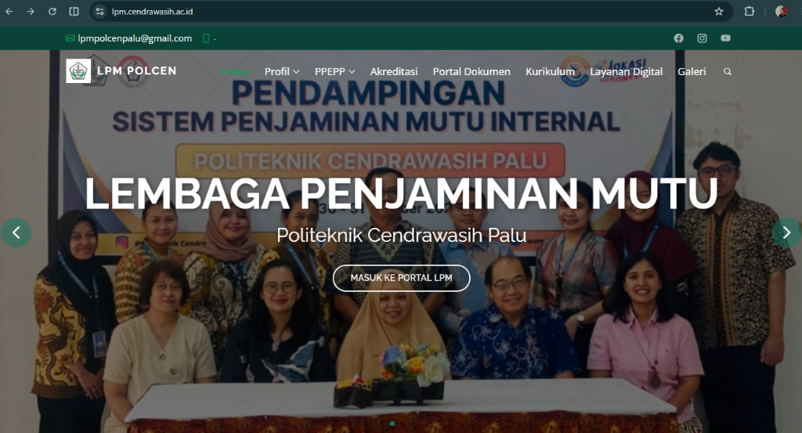
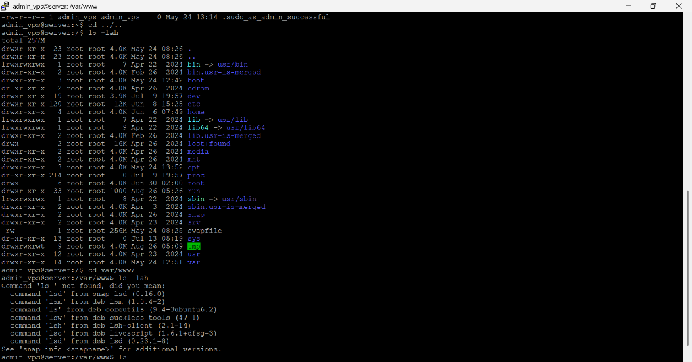
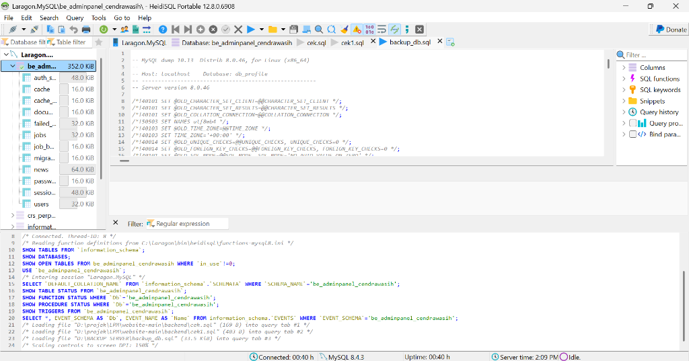
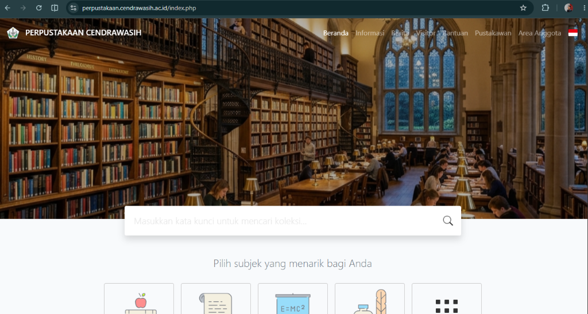

Membangun Aplikasi Web Skala Institusi dengan Laravel & Alpine.js
Menjelaskan pengalaman praktis dalam merancang dan mengembangkan sistem informasi akademik dan penjaminan mutu yang efisien.
ReadMore >
Junior Web Developer dan IT Administrator berpengalaman praktis dalam pengembangan aplikasi web full-stack menggunakan Laravel dan manajemen infrastruktur jaringan.
Aplikasi web full-stack, REST API & sistem akademik
Manajemen basis data relasional & kontrol versi kode
Manajemen bandwidth PCQ, konfigurasi VPS & server Linux
Interaktivitas frontend dengan Blade & Alpine.js Laravel
Saya adalah Junior Web Developer & IT Administrator yang berpengalaman dalam pengembangan aplikasi web menggunakan Laravel dan pengelolaan infrastruktur jaringan institusi. Berfokus pada performa sistem yang andal, efisien, serta penggabungan yang mulus antara pengembangan perangkat lunak dan administrasi server.
Alur kerja 6 tahap terintegrasi antara pengembangan web full-stack dan manajemen infrastruktur jaringan IT — dari analisis hingga monitoring.
Kumpulan proyek yang pernah saya kerjakan — mulai dari web app full-stack, desain UI/UX, hingga solusi rekayasa jaringan.
Menampilkan integrasi 12+ proyek pengembangan aplikasi web Laravel, administrasi server Linux VPS, dan optimasi jaringan MikroTik.





Menjelaskan pengalaman praktis dalam merancang dan mengembangkan sistem informasi akademik dan penjaminan mutu yang efisien.
ReadBerbagi tips teknis seputar cara mengatur alokasi bandwidth dinamis untuk memisahkan akses Dosen dan Mahasiswa secara otomatis.

Langkah-langkah esensial dalam mengelola server Linux, konfigurasi domain (.ac.id), hingga pemeliharaan sistem yang andal.
Read